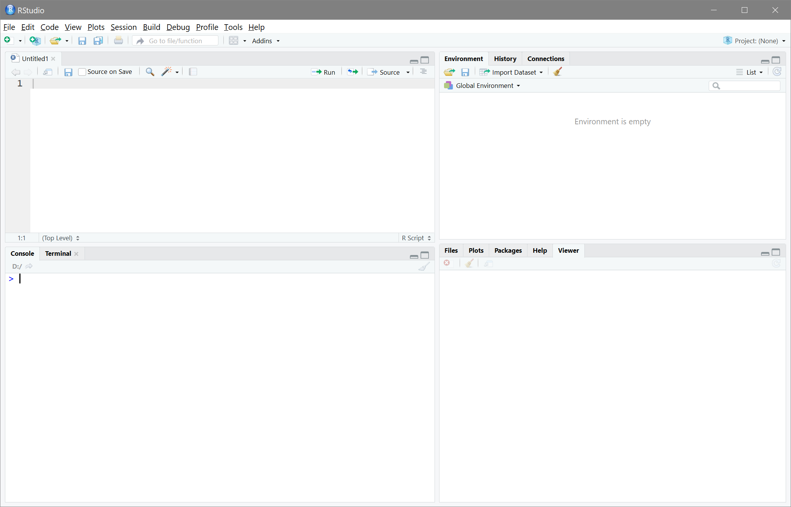

R Crash-Kurs
Contents
R Crash-Kurs#
Inhalte#
Kernfragen dieses Beitrags
- Was ist R und was ist RStudio?
- Was ist die Konsole und was ist die Syntax?
- Wie kann ich Syntax ausführen?
- Wie sehen Ergebnisse von Befehlen in R aus?
- Wie kann ich R als Taschenrechner und für logische Vergleiche benutzen?
- Was sind Funktionen und wie sind sie aufgebaut?
- Wie bekomme ich in R Hilfe?
- Was sind Objekte?
- Was ist das Environment?
- Was sind Vektoren und welche unterschiedlichen Arten gibt es?
- Welche mehrdimensionalen Datenstrukturen gibt es und worin unterscheiden sie sich?
- Wie kann ich aus Datensätze einzelne Variablen oder Beobachtungen extrahieren und sie hinzufügen?
- Wie importiere und exportiere ich Daten?
Warum R?#
Ziel dieses gesamten R-Praktikums ist es, dass Sie am Ende des Semester geübt im Umgang mit R sind, die Grundfunktionalität beherrschen und die Analyseverfahren durchführen können, die in der Vorlesung behandelt werden. Damit wir - oder genauer genommen, eigentlich Sie - dieses Ziel erreichen, legen wir hier mit einer “kurzen” Einführung in die Grundprinzipien von und den Umgang mit R los. Viele Dinge, die hier besprochen werden, sind auch in den anderen Sitzungen zu dieser Veranstaltung relevant und werden dort immer wieder vor kommen. Deswegen ist es das Beste, einfach nebenbei RStudio auf zu haben und die hier beschriebenen Schritte auch direkt selbst mit zu machen.
Zuerst aber ein bisschen ausholen: R haben wir für die Lehre aus einer Reihe von Programmen ausgewählt, weil es ein paar hervorragende Eigenschaften hat:
R ist “free & free”
“Free (as in beer)”: gratis verfügbar, für jeden zugänglich
“Free (as in speech)”: durch die Öffentlichkeit, nicht durch einzelne Instanz reguliert
Extrem weit verbreitet
Laut Google Scholar knapp 250 000 mal zitiert
Allein in den letzten 30 Tagen 478666 mal heruntergeladen
Für Hausarbeiten, Projekte, Abschlussarbeiten gut geeignet
Auswertung und Fließtext in einer Datei (wie dieser) vereinbar
Wiederherstellbarer Arbeitsablauf
Mit jedem teilbar
Auch außerhalb der Universität und Forschung eine gefragte Fähigkeit
Ein paar nützliche Links für R sind die R Main Page, wo R runtergeladen werden kann und diverse technische Details zu finden sind. Für eine kurze, schnelle Einführung in verschiede R-relevante Themen bietet sich Quick R und, spezifisch für die Psychologie, das Personality Project an. Eine Einführung in die R-Nutzung, an die auch dieses Skript angelehnt ist, findet sich im repository Scientific Methods for Open Behavioral, Social and Cognitive Sciences.
RStudio#
Weil die traditionelle R Nutzeroberfläche extrem spartanisch ist, werden wir auf dieser Seite mit RStudio arbeiten. RStudio ist eine zusätzliche Nutzeroberfläche, die den Umgang durch diverse convenience features mit R ein wenig erleichtert. Es muss separat installiert werden, ist aber, genau wie R selbst, gratis erhältlich. Um RStudio herunterzuladen besuchen Sie am einfachsten https://www.rstudio.com/.
{kind=link}
RStudio besteht aus vier Panels. Zunächst sind nur drei sichtbar - durch Strg+Shift+n (OS X: Cmd+Shift+n) oder über den
{kind=link}
Button öffnen Sie eine neue Skriptdatei und das vierte Panel erscheint. R ist syntaxbasiert - genau genommen ist R eigentlich eine Programmiersprache und kein Auswertungsprogramm - und im neu erschienenen Fenster können Sie diese Syntax schreiben. Das pure schreiben bewirkt zunächst nichts. Damit etwas passiert, muss die Syntax mit Strg+Return (OS X: cmd+Return) oder mit dem

Button ausgeführt werden. Wenn Sie z.B. 3 + 4 in die Syntax schreiben und so ausführen, erscheint in der Konsole:
3 + 4
Erste Schritte#
Eine wichtige Funktionalität jeder Programmiersprache sind Kommentare, die dazu dienen sollen das Vorgehen in Syntax zu gliedern und leichter verständlich zu machen. In R werden sie durch (beliebig viele) # begonnen und enden bei einem Zeilenumbruch. Mit Kommentaren kann Syntax auch in verschiedene Abschnitte gegliedert werden. Empfehlenswert ist es, solche Abschnittüberschriften mit #### zu beginnen und mit ---- zu beenden. RStudio erkennt solche Kommentare automatisch als Überschriften und stellt über den
{kind=link}
Button eine darauf basierende Gliederung zur Verfügung.
Wir können diese Funktionalität der Kommentare am Beispiel der Nutzung von R als Taschenrechner ausprobieren:
#### R als Taschenrechner ----
3 + 4 # Addition
3 - 4 # Subtraktion
Daten#
Um zu verstehen, wie Daten in R funktionieren, nutzen wir als Beispiel ein klassisches Experiment aus der Psychologie: den Stroop Test. Die Grundidee lässt sich am leichtesten in einem Bild darstellen:
Grün |
Blau |
Blau |
Rot |
|---|---|---|---|
Grün |
Gelb |
Rot |
Grün |
Der Stroop-Effekt ist der Unterschied zwischen der durchschnittlichen Zeit, die man benötigt um die Farbe zu nennen, in der ein Wort abgebildet ist - je nachdem ob die Farbe und das Wort gleich sind oder nicht. Wenn Sie über den Stroop Test mehr erfahren möchten, oder ihn selbst mal ausprobieren wollen, finden Sie bei Psytoolkit Informationen und eine Online-Variante des Tests.
Aufgaben#
R als Taschenrechner
- Bestimmen Sie das Ergebnis von 3+7⋅12
- Prüfen Sie mit logischen Operatoren, ob das Ergebnis aus der letzten Aufgabe das Selbe ist, wie 3⋅29
- Bestimmen Sie √115 und legen Sie das (ganzzahlig) gerundete Ergebnis in einem Objekt namens zahl ab.
- Folgende Syntax verursacht einen Fehler: 6 * 1,56. Wodurch kommt dieser Fehler zustande?
Lösungen#
R als Taschenrechner
- Bestimmen Sie das Ergebnis von 3+7⋅12